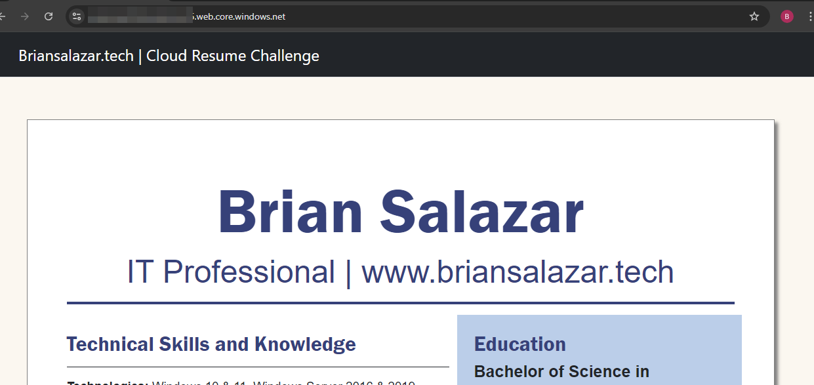
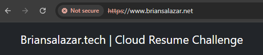
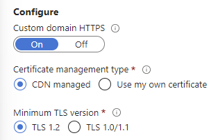
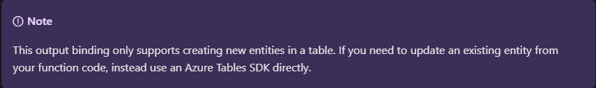
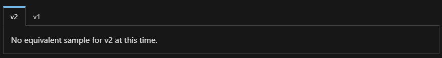

The Project (Azure Edition) ☁️
I had come across the Cloud Resume Challenge while browsing the internet for potential project ideas. For anyone interested in the challenge, it can be found here. What enticed me about the Cloud Resume Challenge is that it was a unique hands-on project and could be completed in either AWS, Azure or GCP. The project bridged the gap between technologies I have learned in the past and actual hands-on experience.
Another benefit of pursuing this project was that I had been weighing moving away from my hosted WordPress website into a more economical solution. The initial project only required an online resume. However, I have expanded on that and moved my entire portfolio website onto this static website. My original portfolio website and this iteration were/are static websites and there were many more economic solutions for hosting a static website than what I was using for my original website.
I created a separate page on my experience moving off WordPress and the creation of this website. This page will focus more on my experience on the actual Cloud Resume Challenge.
One of the requirements and prerequisites of the project was to obtain an entry level cloud certification such as the AZ-900. Prior to starting this project, I have already passed the AZ-900 as well as the AZ-104 exam. To view a list of certifications I have passed click here.
Additionally, here is a link to the GitHub repository I created for this project.
The following sections will focus on my experience working on the project as well as the challenges I encountered and my reflection on completing the project!
Chunk 1: Building the Front-End 🌐
HTML & CSS
To kick off the project, I created an HTML version of my actual resume. Using CSS styling my web-based resume came out looking almost identical to my actual resume.
As you can see, I have expanded the scope of the project and re-created my portfolio website in conjunction with this project. Using the Bootstrap framework along with my own CSS I recreated an enhanced version of my original portfolio website.
Creating a Static Website
Although my portfolio website could have been served separately using a solution such as GitHub Pages I went ahead and deployed the entire website as a static website using Azure Blob Storage in conjunction with my CRC Resume.
To start off with this task, I signed up for a free tier Azure subscription. I then created a storage account and a Blob Storage Container and enabled the static website feature. I then uploaded my HTML resume to the blob storage account and navigated to the primary endpoint link that was generated and verified that my resume was loaded successfully.
Bellow is a screenshot of my cloud resume rendering successfully. As you can see, the scope of the website has since expanded. 😊
HTTPS and DNS
Accessing a website with the long URL generated by Azure Storage is less than ideal.
The next couple of tasks in this project were to obtain a domain name for my website and enable HTTPS for that domain.
To start off I purchased a separate domain, briansalazar.net, to complete this project. After purchasing the domain, I then set up an Azure Content Delivery Network Endpoint (CDN) to point to the static website hosted in blob storage. In addition to that, I linked the custom domain I purchased to the CDN endpoint. However, when navigating to www.briansalazar.net, HTTPS was not being used.
To fix this issue, I went to the custom domain’s settings and enabled HTTPS. Afterwards, when navigating to the website, HTTPS was enabled.
Chunk 2: Building the API ⚡
Setting up the Database
Prior to creating a database to keep track of the resume view count, I had written up some JavaScript code that tracks page views on the bottom of the resume page. However, the value displayed was not accurate and the value was not stored persistently.
I played around with both Azure Cosmos Database NoSQL and Tables APIs and ended up using the Table API to keep track of page views.
The Table API used a simple Key Value pair to keep track of page views. However, I did weigh using the NoSQL API since I was able to follow along on the walkthrough and examples on Microsoft’s documentation. However, this was one of the struggles I encountered when working on this chunk of the project.
Creating the API with Azure Functions & Python
This was without a doubt the hardest part of this project.
The major hurdles I encountered for this task were the following:
- Choosing the Python Programming Model V2 vs V1
- Lack of examples of the Python Programming Model V2 for the NoSQL API
- Finding V2 examples if input and output bindings for the Tables API
Having not previously created a function app I decided to follow the quick start guides for creating an HTTP Trigger function and adding an output binding for an existing function. These two quick start guides followed the Python Programming V2 Model. However, I initially wanted to use the Tables API to store the page view values but I was unable to find any examples in the Programming V2 model for the Tables API. Additionally, the documentation stated that the output binding would not be able to update a value and to instead use the SDK.
Scratching my head on this, I decided to play around a bit more with the NoSQL API a bit more since that was used in the quick start guide and had Python Programming V2 examples. However, when looking into Input bindings, there were sections that stated there were no equivalent samples at the time I visited the documentation.
After some time poking around and experimenting with both the Python Programming Models, it clicked for me that I could accomplish this task using the Azure Tables SDK 🤯. Using the Programming V2 model in conjunction with the SDK, I was able to get the function.py file to execute successfully. Using Python, I got the Cosmos DB Table to update and return the view count value when the HTTP Trigger executes.
Source Control
Prior to working on the API portion of this project. I uploaded the front-end portion of this project into a GitHub repository. Once I was able to successfully execute the Tables API, I uploaded the Azure Function code and files into source control.
Chunk 3: Front-End Back-End Integration 🔗
JavaScript
Prior to working on chunk two, I wrote JavaScript code to display page views on my resume page. Additionally, I added code to display the current year at the bottom of every page on this website.
Arriving to chunk three, I rewrote the JavaScript code to execute the Azure Function when the resume page loads. The function, then returned the total number of page views from the Cosmos DB Table. This value is then displayed at the bottom of my resume page.
Although, I could have used this page view feature to track the visits on the index page or all page views, I decided to keep the scope to the resume page.
Tests
I performed several tests to verify that the Azure Function was able to execute successfully. Once it clicked for me how to utilize the HTTP trigger and read/write to the Cosmos DB I was able to successfully execute the function. Below are some of the ways I tested that the function app worked successfully.
- I coded the Azure Function App using Visual Studio Code. I first verified the Function App worked successfully locally. Afterwards I deployed the App to Azure and tested the app in VS Code and from the Azure portal.
- Using Postman, I was able to test the app and verified I received a 200 response.
- Using Cypress, I performed a test and verified that the function URL returned a 200 response.
- Additionally, I wrote additional JavaScript code to verify that the function URL returned a 200 response along with the current view count value.
Chunk 4: Automation / Continuous Integration ⚙️
Infrastructure as Code
This is one area I do want to touch on more outside of this project. I was able to generate an ARM template from the resources used to create the Function App and the Cosmos Database. Playing around with the template, I created resources using that template. Additionally, I generated an Azure Bicep template from the generated ARM template.
For this task, the ARM template was requested to avoid making direct modifications to resources in the Azure console. Since I do not envision making changes to the API, I paused this task at generating the resource template. Any changes I can foresee would be made using Visual Studio Code.
CI/CD
During the first chunk of this project, I had decided to deploy this website to Azure Storage from a GitHub repository. To accomplish this, I used GitHub Actions to create a new workflow. The workflow was set up to trigger any time there was content pushed to the repository. The contents of the repo were then pushed into the Blob Storage account, and the CDN endpoint was then purged.
Reflection 💭
Starting with the struggle bus… This project presented a handful of challenges including typing up a bit of JavaScript code, troubleshooting a CORS issue (this one was not too bad with the help of a quick internet search and inspecting the developer tools console 😊) and most significantly, coding the Azure Function app to communicate with the Cosmos Database.
I spent a good amount trial and error trying to set up the Cosmos DB bindings but once it clicked to me that I can execute additional code using the Tables SDK getting that connection to work was a breeze. Another minor hiccup with the function app was figuring out how to get the Tables module to execute in the function.py file within the Azure Portal. When I first tried coding the code in the portal, the code would reset to its default template when the code executed and returned an error code. Once I figured out the best way to tackle this would be to code and test the function app in VS code and utilize the requirements.txt file, those hurdles were overcome. ✅
Having previous experience with Python and creating Flask web apps, the Python portion along with the front-end were not too much of a challenge. Additionally, having knowledge of the resources and tasks needed to accomplish the end goal helped in successfully completing this project. If there was anything I was not sure about, Microsoft’s documentation or a quick search steered me in the right direction.
This was a fun project, and I would recommend it to anyone that wants some hands-on experience working with cloud technologies. An added benefit for me was that I had an actual need outside of the challenge itself to tackle this project. The original scope was to create a website that replicates my physical resume but ended up expanding to hosting my entire portfolio website.